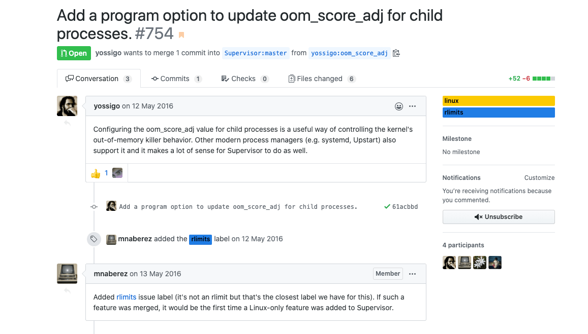

Linux 系统上面总有一个小众但神奇的命令！
当物理内存和交换空间不够用时，OOM Killer 就会选择杀死进程，那么它是怎样知道要先杀死哪个进程呢？其实 Linux 的每个进程都有一个 oom_score (位于/proc/<pid>/oom_score文件中)，这个值越大，就越有可能被 OOM Killer 选中。
- 如果进程消耗的内存越大，它的 oom_score 通常也会越大。
- 如果进程运行了很长时间，并且消耗很多 CPU 时间，那么通常它的 oom_score 会偏小。
- 如果进程以 superuser 的身份运行，那么它的 oom_score 也会偏小。
如何才能尽量防止某个重要的进程被杀死呢？Linux 每个进程都有一个 oom_adj(位于/proc/<pid>/oom_adj文件中)，这个值的范围是 [-17, +15]，进程的 oom_adj 会影响 oom_score 的计算，也就是说，我们可以通过调小进程的 oom_adj 从而降低进程的 oom_score。
# MySQL OOM Killer
$ sudo echo -10 > /proc/$(pidof mysqld)/oom_adj1. 问题现象
小问题引发的，小小思考！
事情是这样的，我们一个服务因为跑任务导致服务器的内存使用过多，导致系统出现 OOM 的情况。然后启动了系统保护，把 supervisor 服务给杀了，但是他启动的子进程没有杀完。导致任务跑完之后，内存释放了，而 ci 对应的之前子进程没有杀完且启动了新的进程，导致服务奇怪的异常出现。
在 supervisor 官方 issus 中发现了下面这个问题，很早之前就有人提出了这个问题，并且给了自己的补丁方法，但是项目的维护者不知道出于什么考虑，导致这个问题已经没有合入也没有任何解释。我在下面 @ 了两个核心开发者，但是也是没有回复。但是，你却发现他们还是在不断地提交代码和合入代码，我有点方了。
现在就是继续关注这个问题，看看之后什么会合入或者修复，目前看还是只有考虑使用其他的方式来规避这个问题的出现。

2. 问题原因
知其然，知其所以然！
Linux 系统中的 OOM killer 是为了在内存不足的情况下，杀掉消耗内存最多、优先级最低的任务，从而保障系统可以最基本的正常运行。内核通过计算内存消耗，得出 oom_score 的数值。同时 oom_score_adj 允许用于自定义，我们理解为程序运行的优先级，优先级越高对应的值越小，即越小越不容易被杀，范围在 -1000~1000 之内。
在系统内存紧张的时候，内核通过 oom = oom_score + oom_score_adj 公式，计算出分数最高的进程，向其发送关闭信号。
# OOM的计算方式
oom = oom_score + oom_score_adj
# OOM_SCORE的计算方式
# 内存消耗: 常驻内存RSS+进程页面+交换内存
# 总共内存: 总的物理内存+交换分区
oom_score = 内存消耗/总内存*1000
# OOM_SCORE_ADJ
oom_score_adj = 0 (默认为0；用户可以自定义数值)3. 计算示例
加强对于上面说的公式的计算！
说了这么多，那么我们一起找个进程，具体看看各部分到底是怎么计算出来的。
# 程序占用的RSS: 104888KB/1024 = 102.4M
$ pidstat -r -p 21465
Linux 5.3.0-53-generic (bohr) 05/15/2020 _x86_64_(8 CPU)
06:48:22 PM UID PID minflt/s majflt/s VSZ RSS %MEM Command
06:48:22 PM 999 21465 0.52 0.09 11195580 104888 0.32 java
# 查看swap使用情况
$ for i in $(ls /proc | grep "^[0-9]" | awk '$0>100'); do \
awk '/Swap:/{a=a+$2}END{print '"$i"', a/1024"M"}' \
/proc/$i/smaps; done | sort -k2nr | head
7859 292.898M
# 整个机器的内存
# Total = 32116M + 31743M = 63859M
$ free -m
total used free shared buff/cache available
Mem: 32116 14566 11140 130 6410 16988
Swap: 31743 9672 22071
# 计算oom_score数值
oom_score = (102+293)/63859# 获取进程PID号
$ sudo ps -ef | grep 21465
netdata 21465 21409 0 May11 ? 00:09:32 java -Dlog4j.configuration=file:////var
# 查看进程oom_score_adj的值
$ cat /proc/21465/oom_score_adj
0
# 我们自己进行设置
$ echo -15 > /proc/21465/oom_score_adj
# 计算oom_score_adj数值
oom_score_adj = -154. 代码逻辑
我自己没有看过源代码，只是转贴了代码片段！
我们上面只是对其 OOM(Out of memory) 得分怎么计算给出了直接公式，已经其对应子项的计算方法。通过公式，我们可以很快的计算出进程的得分情况，来判断哪些进程会被优先终止掉。而下面则是，程序中对应的代码实现细节。
- 计算 oom 的代码
// 计算oom
unsigned long oom_badness(
struct task_struct *p, struct mem_cgroup *memcg,
const nodemask_t *nodemask, unsigned long totalpages)
// 总内存= 物理内存 + 交换分区
*totalpages = totalram_pages + total_swap_pages;
// 累加 常驻内存RSS + 进程页面 + 换内存
points = get_mm_rss(p->mm) + atomic_long_read(&p->mm->nr_ptes) +
get_mm_counter(p->mm, MM_SWAPENTS);
// oom_score_adj
// oom = oom_score + oom_score_adj
adj *= totalpages / 1000;
points += adj;
......- 找出 oom 最大的进程
// 找出oom最大的进程
static struct task_struct *select_bad_process(
unsigned int *ppoints, unsigned long totalpages,
const nodemask_t *nodemask, bool force_kill)
// 循环遍历所有进程
for_each_process_thread(g, p) {
// 调用上面的oom_badness方法计算oom
points = oom_badness(p, NULL, nodemask, totalpages);
// 选出最大oom进程
if (!points || points < chosen_points)
continue;
if (points == chosen_points && thread_group_leader(chosen))
continue;
chosen = p;
chosen_points = points;
......- 发送 kill 信号关闭进程
// 发送kill信号关闭进程
oom_kill_process(
p, gfp_mask, order, points, totalpages,
NULL, nodemask, "Out of memory");5. 解决办法
我们现在已经知道了原理，那怎么处理这个问题呢？
- 1.增大系统内存
问题就是因为内存不够导致的，简单粗暴也最有效，我们增加存在就行了！
- 2.升级到 64 位操作系统
因为在 64 位的操作系统没有对 low-memory 限制。
- 3.使用 hugemem 内核
这种内核以不同的方式分割 low/high memory，而且在大多数情况下会提供足够多的 low memory 到 high memory 的映射。在大多数案例中，这是一个很简单的修复方法：安装 hugemem kernel RPM 包，然后重启即可。
- 4.配置 OOM killer
通过一些内核参数来调整 OOM killer 的行为，避免系统在那里不停的杀进程。比如我们可以在触发 OOM 后立刻触发 kernel panic，kernel panic 10 秒后自动重启系统。
echo "vm.panic_on_oom=1" >> /etc/sysctl.conf
echo "kernel.panic=10" >> /etc/sysctl.conf
sysctl -p- 5.关闭/打开
oom-killer(慎用)
echo "0" > /proc/sys/vm/oom-kill
echo "1" > /proc/sys/vm/oom-kill- 6.通过
choom命令设置优先级
# 使用choom命令
NAME
choom - display and adjust OOM-killer score.
SYNOPSIS
choom -p pid
choom -p pid -n number
choom -n number [--] command [argument...]
DESCRIPTION
The choom command displays and adjusts Out-Of-Memory killer score setting.
OPTIONS
-p, --pid pid
Specifies process ID.
-n, --adjust value
Specify the adjust score value.
-h, --help
Display help text and exit.
-V, --version
Display version information and exit.# 使用supervisor修改配置
[group:ci]
programs=app-1,app-2
[program:app-1]
directory=/data/app1
command=sudo choom -n -500 -- sudo -u app /data/app1/venv/bin/python run.py
user=app
autostart=true
stopasgroup=true
killasgroup=true
autorestart=unexpected
[program:app-2]
directory=/data/app2
command=sudo choom -n -500 -- sudo -u app /data/app2/venv/bin/python run.py
user=app
autostart=true
stopasgroup=true
killasgroup=true
autorestart=unexpected6. 参考链接
送人玫瑰，手有余香！